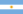
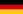
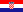

<!DOCTYPE HTML PUBLIC "-//W3C//DTD HTML 4.01//EN" "http://www.w3.org/TR/html4/strict.dtd">
<html>

    <head>
        <meta http-equiv="Content-Type" content="text/html; charset=utf-8">
        <title>amMap examples</title>

        <link rel="stylesheet" href="../ammap/ammap.css" type="text/css">
        <script src="../ammap/ammap.js" type="text/javascript"></script>
        <!-- map file should be included after ammap.js -->
        <script src="../ammap/maps/js/worldLow.js" type="text/javascript"></script>

        <script>
            // svg path for target icon
            var targetSVG = "M9,0C4.029,0,0,4.029,0,9s4.029,9,9,9s9-4.029,9-9S13.971,0,9,0z M9,15.93 c-3.83,0-6.93-3.1-6.93-6.93S5.17,2.07,9,2.07s6.93,3.1,6.93,6.93S12.83,15.93,9,15.93 M12.5,9c0,1.933-1.567,3.5-3.5,3.5S5.5,10.933,5.5,9S7.067,5.5,9,5.5 S12.5,7.067,12.5,9z";
            // svg path for plane icon
            var planeSVG = "M19.671,8.11l-2.777,2.777l-3.837-0.861c0.362-0.505,0.916-1.683,0.464-2.135c-0.518-0.517-1.979,0.278-2.305,0.604l-0.913,0.913L7.614,8.804l-2.021,2.021l2.232,1.061l-0.082,0.082l1.701,1.701l0.688-0.687l3.164,1.504L9.571,18.21H6.413l-1.137,1.138l3.6,0.948l1.83,1.83l0.947,3.598l1.137-1.137V21.43l3.725-3.725l1.504,3.164l-0.687,0.687l1.702,1.701l0.081-0.081l1.062,2.231l2.02-2.02l-0.604-2.689l0.912-0.912c0.326-0.326,1.121-1.789,0.604-2.306c-0.452-0.452-1.63,0.101-2.135,0.464l-0.861-3.838l2.777-2.777c0.947-0.947,3.599-4.862,2.62-5.839C24.533,4.512,20.618,7.163,19.671,8.11z";

            AmCharts.makeChart("mapdiv", {
                type: "map",


                dataProvider: {
                    map: "worldLow",
                    linkToObject: "all",
                    images: [
                        {
                          "images": [
                            {
                              "scale": 1,
                              "title": "ATP World Tour Masters 250<br/><span style='font-size: 14px'><b>Open de Moselle</b></span><hr/><center>Winners</center><table style='width:100%'><tr><th style='width:48%'>Single</th><th style='width:49%'>Double</th></tr><tr><td><br/>Lucas Pouille</td><td><br/>Julio Peralta<br/><br/><br/>Horacio Zeballos</td></tr></table><hr/><b>Metz</b>, France<br/>25 September 2016",
                              "color": "#db7400",
                              "longitude": 6.1757,
                              "svgPath": targetSVG,
                              "latitude": 49.1193
                            },
                            {
                              "scale": 1,
                              "title": "ATP World Tour Masters 250<br/><span style='font-size: 14px'><b>St. Petersburg Open</b></span><hr/><center>Winners</center><table style='width:100%'><tr><th style='width:48%'>Single</th><th style='width:49%'>Double</th></tr><tr><td><br/>Alexander Zverev</td><td><br/>Dominic Inglot<br/><br/><br/>Henri Kontinen</td></tr></table><hr/><b>St. Petersburg</b>, Russia<br/>25 September 2016",
                              "color": "#db7400",
                              "longitude": 30.3351,
                              "svgPath": targetSVG,
                              "latitude": 59.9343
                            }
                          ],
                          "lines": [],
                          "id": "ATP250"
                        },
                        {
                          "images": [
                            {
                              "scale": 1,
                              "title": "ATP World Tour Masters 250<br/><span style='font-size: 14px'><b>Open de Moselle</b></span><hr/><center>Winners</center><table style='width:100%'><tr><th style='width:48%'>Single</th><th style='width:49%'>Double</th></tr><tr><td><br/>Lucas Pouille</td><td><br/>Julio Peralta<br/><br/><br/>Horacio Zeballos</td></tr></table><hr/><b>Metz</b>, France<br/>25 September 2016",
                              "color": "#db7400",
                              "longitude": 6.1757,
                              "svgPath": targetSVG,
                              "latitude": 49.1193
                            },
                            {
                              "scale": 1,
                              "title": "ATP World Tour Masters 250<br/><span style='font-size: 14px'><b>St. Petersburg Open</b></span><hr/><center>Winners</center><table style='width:100%'><tr><th style='width:48%'>Single</th><th style='width:49%'>Double</th></tr><tr><td><br/>Alexander Zverev</td><td><br/>Dominic Inglot<br/><br/><br/>Henri Kontinen</td></tr></table><hr/><b>St. Petersburg</b>, Russia<br/>25 September 2016",
                              "color": "#db7400",
                              "longitude": 30.3351,
                              "svgPath": targetSVG,
                              "latitude": 59.9343
                            },
                            {
                              "scale": 1,
                              "title": "Grand Slam<br/><span style='font-size: 14px'><b>US Open</b></span><hr/><center>Winners</center><table style='width:100%'><tr><th style='width:33%'>Single</th><th style='width:33%'>Double</th><th style='width:33%'>Mixed</th></tr><tr><td><br/>Stan Wawrinka</td><td><br/>Jamie Murray<br/><br/><br/>Bruno Soares</td><td><br/>Mate Pavic<br/><br/><br/>Laura Siegemund</td></tr></table><hr/><b>New York</b>, USA<br/>11 September 2016",
                              "color": "#491c5b",
                              "longitude": -74.0059,
                              "svgPath": targetSVG,
                              "latitude": 40.7128
                            }
                          ],
                          "lines": [],
                          "id": "all"
                        },
                        {
                          "images": [
                            {
                              "scale": 1,
                              "title": "Grand Slam<br/><span style='font-size: 14px'><b>US Open</b></span><hr/><center>Winners</center><table style='width:100%'><tr><th style='width:33%'>Single</th><th style='width:33%'>Double</th><th style='width:33%'>Mixed</th></tr><tr><td><br/>Stan Wawrinka</td><td><br/>Jamie Murray<br/><br/><br/>Bruno Soares</td><td><br/>Mate Pavic<br/><br/><br/>Laura Siegemund</td></tr></table><hr/><b>New York</b>, USA<br/>11 September 2016",
                              "color": "#491c5b",
                              "longitude": -74.0059,
                              "svgPath": targetSVG,
                              "latitude": 40.7128
                            }
                          ],
                          "lines": [],
                          "id": "grandslam"
                        },
                        {
                            type: "rectangle",
                            left: 200,
                            top: 45,
                            alpha: 0.5,
                            height: 350,
                            width: 250,
                            color: "#d8d8d8",
                            bringForwardOnHover: false,
                            rollOverColor: "#a3a3a3"
                        }, {
                            label: "Tournaments Filter :",
                            left: 100,
                            top: 20,
                            labelColor: "#3f3f3f",
                            labelFontSize: 20,
                            labelFontSize: 15,
                            rollOverColor: "#3f3f3f"
                        }, {
                            label: "Show All",
                            svgPath: targetSVG,
                            left: 100,
                            top: 45,
                            color: "#1e1e1e",
                            labelColor: "#1e1e1e",
                            labelFontSize: 20,
                            linkToObject: "all",
                            labelFontSize: 15
                        }, {
                            label: "Grand Slam",
                            svgPath: targetSVG,
                            left: 100,
                            top: 70,
                            color: "#491c5b",
                            labelColor: "#491c5b",
                            labelFontSize: 20,
                            linkToObject: "grandslam",
                            labelFontSize: 15
                        }, {
                            label: "ATP World Tour 250",
                            svgPath: targetSVG,
                            left: 100,
                            top: 95,
                            color: "#db7400",
                            labelColor: "#db7400",
                            labelFontSize: 20,
                            linkToObject: "ATP250",
                            labelFontSize: 15
                        }
                    ]
                },

                areasSettings: {
                    unlistedAreasColor: "#8dd9ef"
                },

                imagesSettings: {
                    color: "#CC0000",
                    rollOverColor: "#00FF00",
                    selectedColor: "#FF0000"
                },

                backgroundZoomsToTop: true,
                linesAboveImages: true
            });
        </script>
    </head>

    <body>
        <div id="mapdiv" style="width: 100%; background-color:#eeeeee; height: 500px;"></div>
    </body>

</html>
